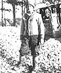
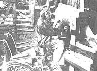
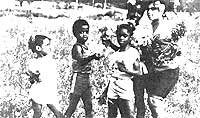

Max Chambers: Oyster Farmer
Max Chambers decided to get into the oyster business because a marine scientist told him that it would be financially rewarding. Although Max soon discovered that putting the idea into action wasn't a simple matter, he persisted . . . and today Chambers is one of only 50 individuals in the country who operate successful oyster hatcheries.
Each spring-at his bayside hatchery near Nanticoke, Maryland-Max puts adult oysters into large tanks whose water is heated to a "summer" temperature. The oysters remain there for about a month, feeding on algae supplied by Chambers. In late April, about three months ahead of their natural schedule, the mollusks spawn. The microscopic young oysters, called spat, are then moved to another tank, which contains strong net bags filled with oyster shells. The spat soon attach themselves to the shells and grow. Chambers then places the nets on pallets that are submerged in Chesapeake Bay, and nature takes over.
Last season the marine specialist started with 100 adult oysters . . . and produced 3-1/2 million spat. Max believes that by using commercial methods, he and his fellow watermen could grow 1,000 bushels of the shellfish per acre of Chesapeake bottom. He's found, however, that his colleagues aren't interested in oyster farms. "I guess they fear that their way of life would be turned into factory work," he says. Still, Chambers dreams of a time when oysters will be massproduced in the bay. ("Despite pollution," he notes, "there is a lot of clean water left in Chesapeake Bay.") His goal is to have the expensive gourmet item transformed into a lowcost source of protein.
Chambers realized some time ago that he could have made money more easily in another occupation. But along the way, oyster farming came to mean far more to him than just a way of earning a living.
-Jack Wennersten.
Sam Dardick: SitDown Farmer
Many folks have abandoned urban life in favor of the simple joys of country living. But Sam Dardick-former city planner and college professor-made the decision to homestead in spite of a disability that confines him to a wheelchair. In 1974, Sam bought acreage in the Sierra foothills of northern California . . .and, with the help of his wife and three children, he's turned that once-overgrown land into a productive organic farm.
Sam made use of skills developed during his urbanplanning days to lay out a homestead that's functional, aesthetically pleasing . . . and capable of being worked by a handicapped person. The gardens and animals are located close to the cedar cabin that the family built. And the raised garden beds-which represent a lot of shoveling on Dardick's part-are separated by wide aisles that can accommodate a wheelchair.
Working the land gives the sitdown farmer a great deal of upper-body exercise. Dardick has planted 100 fruit trees and a large assortment of berries . . . he raises an abundance of vegetables, from asparagus to zucchini . . . and he tends the family's chickens, ducks, and goats. Since Sam is the homestead's chief milker, he's trained his goats to follow vocal commands: At milking and feeding times, the usually ornery creatures will politely jump onto a stanchion at Dardick's request. This committed back-to-the-lander is pleased with his transformation from city slicker to country cousin. His methods may differ from those of an ambulatory farmer, but Sam has achieved the result he desired: an efficient and productive homestead. (Dardick would be happy to share his knowledge with other disabled persons. Anyone interested should write to him at Sai Lake Farms, P.O. Box 294, North San Juan, CA 95960.)
-Geeta Dardick.
Wildflowers in the Bronx
Debris-covered lots in New York City's Bronx can be a health hazard for children who play there and are a contributing factor in the decline of neighborhood property values. But 18 once-blighted acres in the South Bronx are now alive with wildflowers, thanks to a joint effort by the Bronx Frontier Development Corporation, community volunteers, and the Colorado based Applewood Seed Co.
Rubble-strewn sites that had significant public exposure were chosen for the project. Bronx Frontier cleared the city-owned lots . . . volunteers helped to prepare the soil (which was enriched with manure from the Bronx Zoo) . . . and Applewood donated part of the specially formulated, droughtresistant mixture of annuals, biennials, and perennials.
The wildflower meadows provide patches of glorious color in the midst of the city and are a source of delight for neighborhood youngsters. According to Jack Flanagan, president of Bronx Frontier, the project has also resulted in a dramatic increase in land values. Applewood's Gene Milstein notes that the Bronx experiment proves the suitability of wildflowers for urban use: "Their durability makes them an inexpensive, lowmaintenance lawn substitute in every area of the nation. "
-DM.
IN BRIEF . . .
HARVEY JEROME, a 61year-old grandfather, moved to Florida a couple of years ago with the intention of playing a lot of golf. However, he's rarely seen on the links; instead, Harvey's busy producing and marketing Little Thinker tapes for children. The cassettes, which are designed to educate as well as entertain, present carefully researched information in a manner that stimulates the imagination and encourages little listeners to express their feelings and thoughts. Youngsters (and parents) have responded to the tapes with much enthusiasm, and Jerome-who has retired from three other occupationsfeels that he's now in the midst of his most exciting career. (For more information, write Jerome Enterprises, Inc., 6500 N.W. 15th Ave., Ft. Lauderdale, FL 33309.)
ANDY LIPKIS, founder of the organization TreePeople, plans to have one million "smog-eating" trees planted in Los Angeles in time for the 1984 Olympics. TreePeople is being aided in the project by 200 community groups.
|
 |
 |
 |